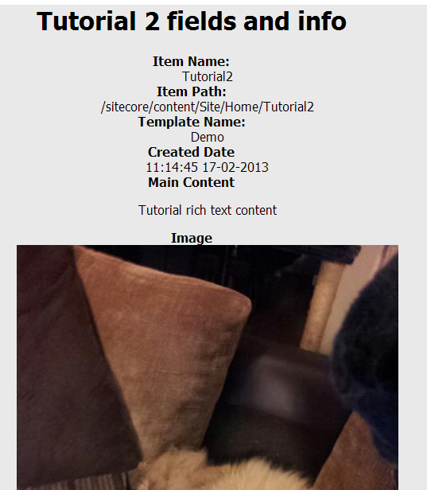

This tutorial will look at some of the options available when mapping fields and information about an item.
For this tutorial we will use an item with the following fields:
Glass.Mapper will automatically try and convert a field value to the data type on the class property. To handle the more specialised data types, such as the image field, Glass.Mapper.Sc has inbuilt field types.
The configuration for this class looks like this:
This configuration uses three different methods to map item fields. By default Glass.Mapper will use the name of the property as the field name. This isn't always possible if the field name contains characters that aren't support by C#, in these scenarios use the FieldName or FieldId to map the field.
This configuration also maps several pieces of information about the item, you can read more about the available options on the SitecoreInfoType page.
Next create a sublayout to render this information, the code behind looks like this:
The ascx page should contain the following:
Fire up the page and you should see the following rendered:
This tutorial has shown a few of the additional item information options, the different ways to map fields implicity, by name or by ID and convert the field value to a specific type.